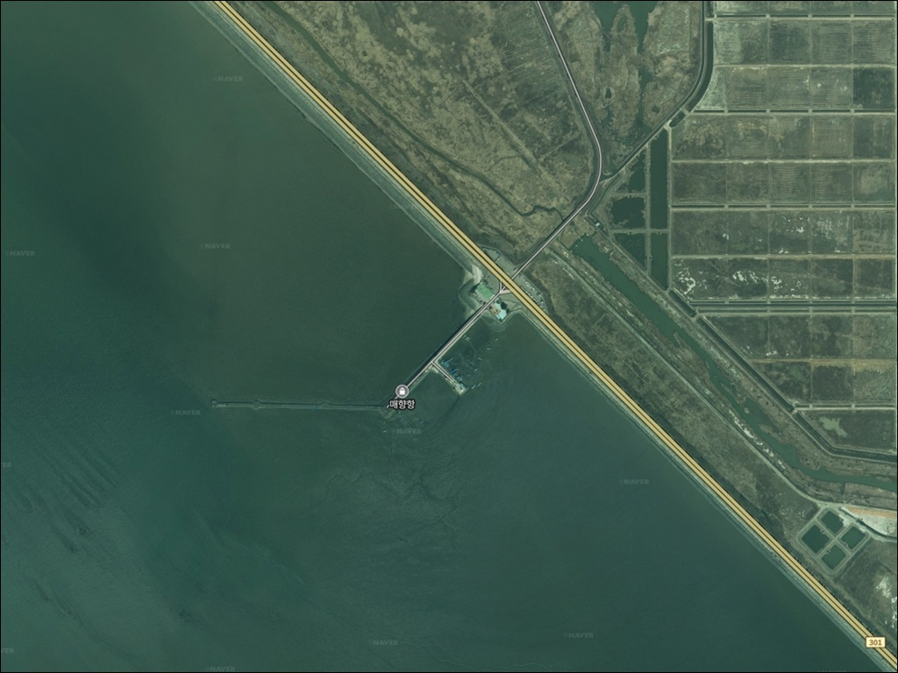
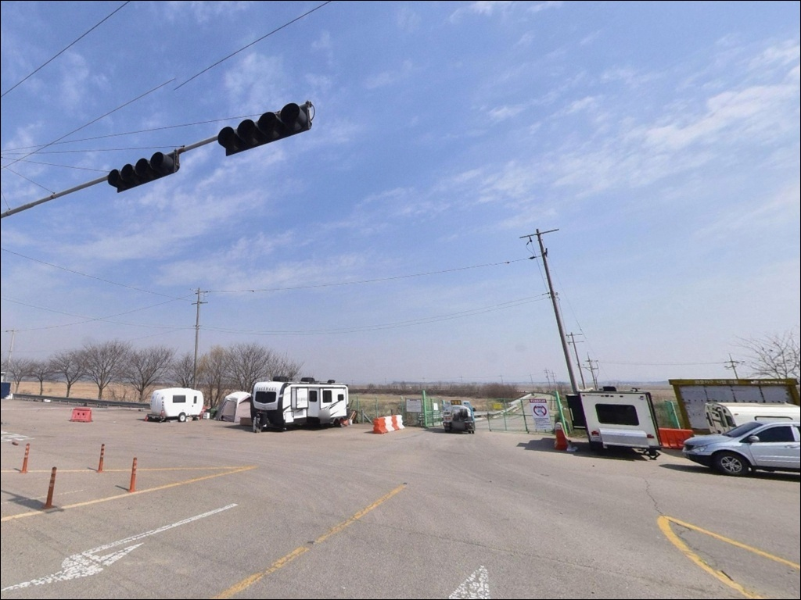
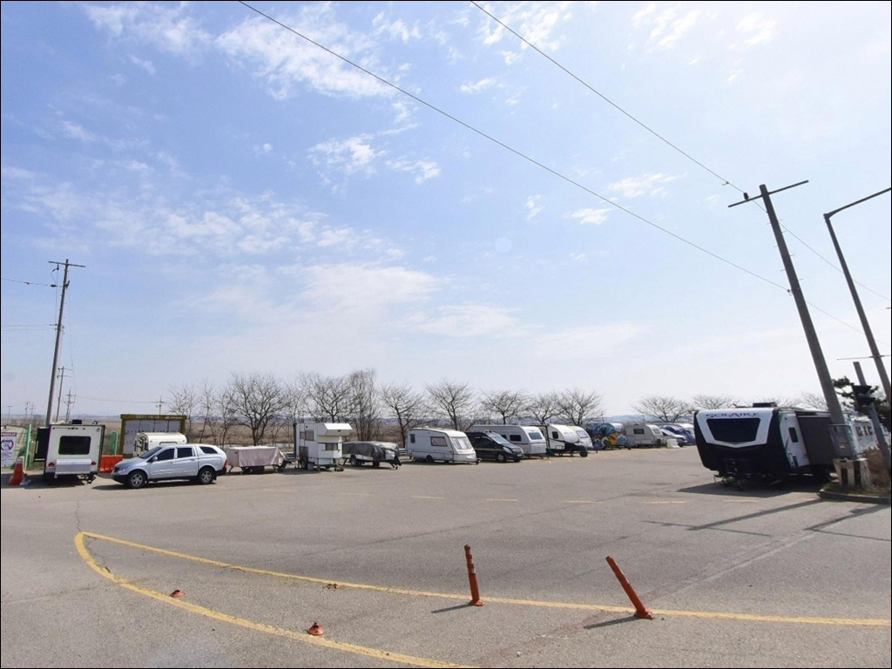
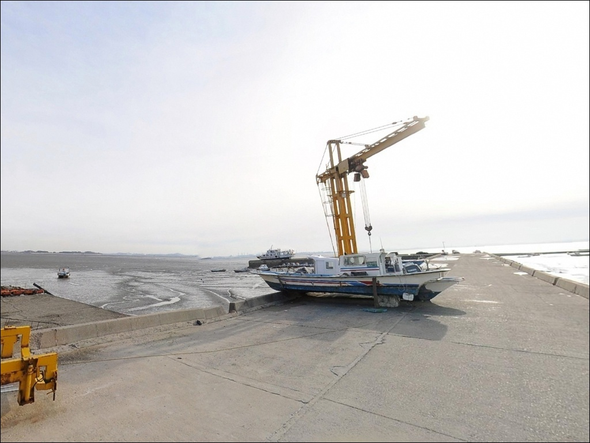
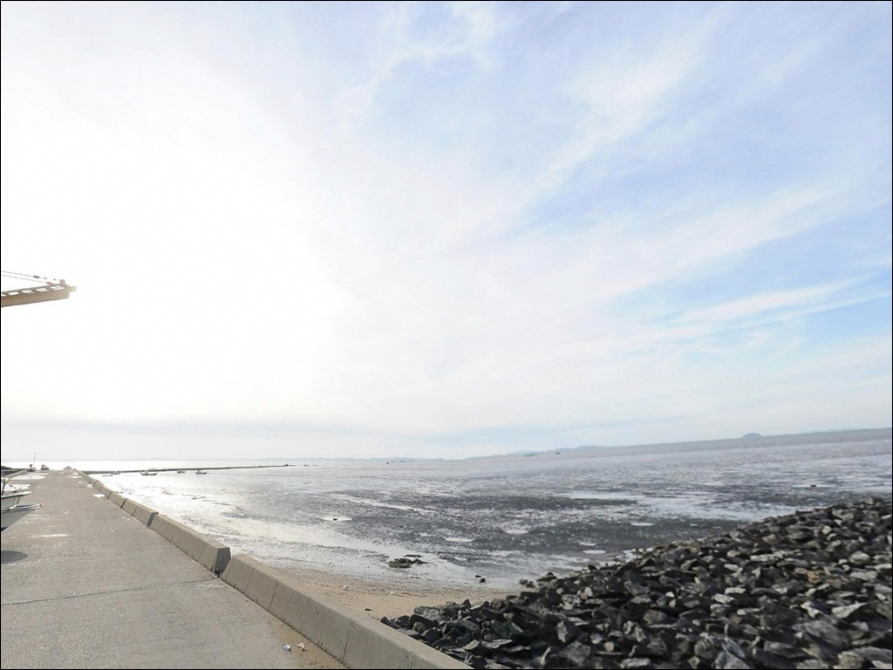
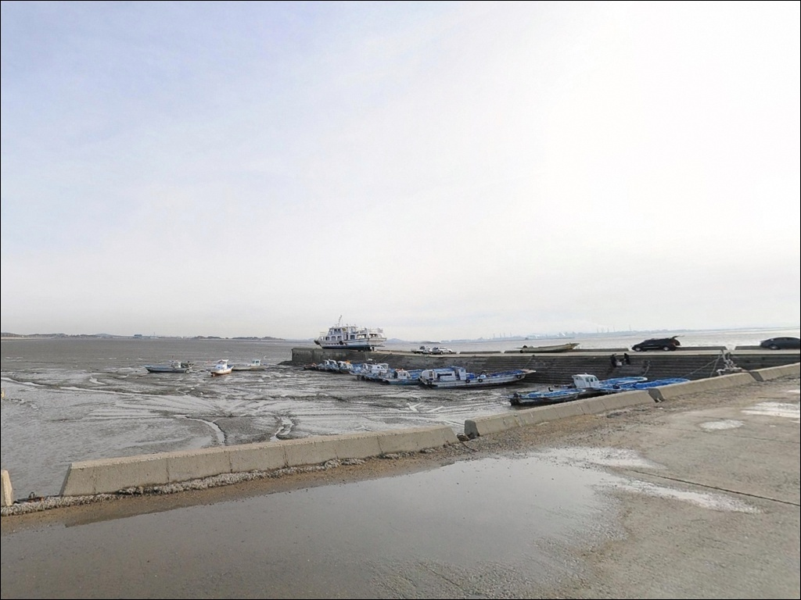
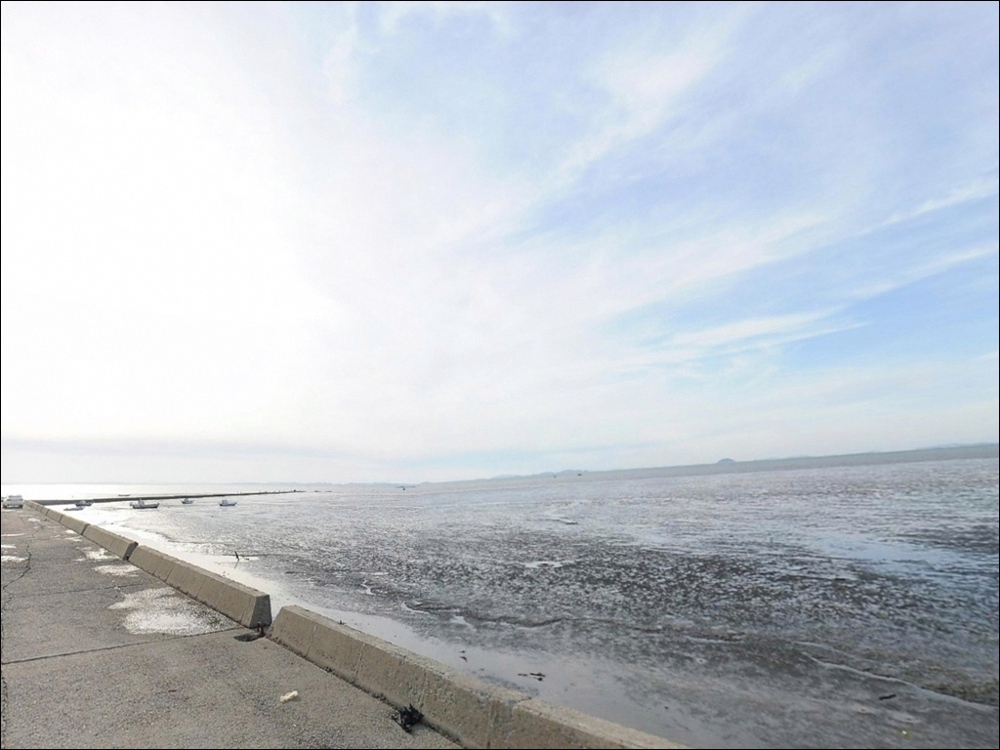
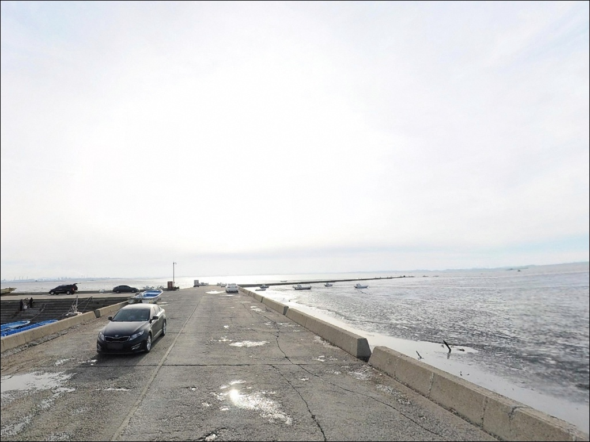
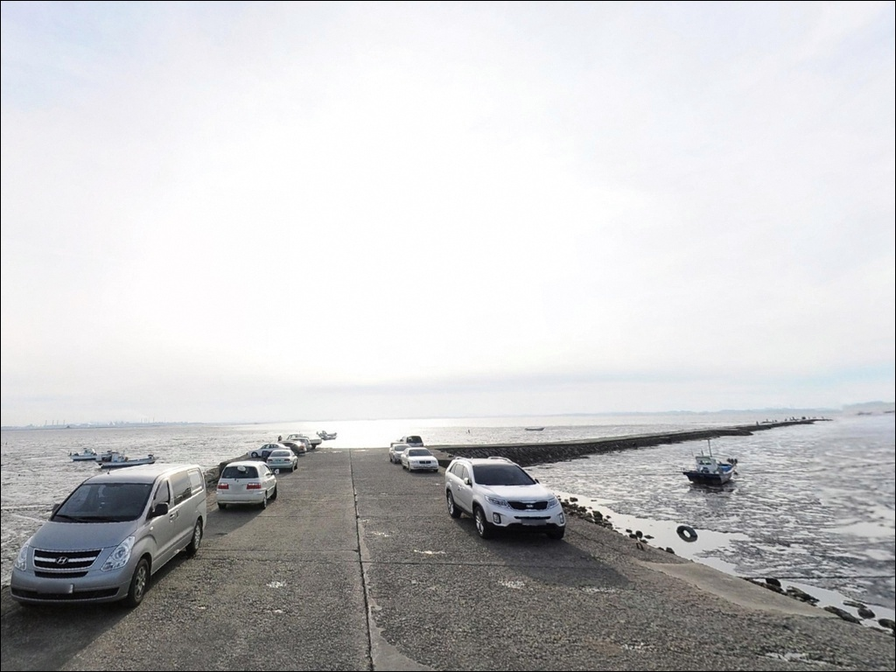

이 페이지에는 광고(제휴 링크 포함)가 있으며, 광고 링크를 통해 구매하면 운영자가 판매 수익 또는 수수료를 받을 수 있습니다. 포인트 사진: 카카오맵 스카이뷰·로드뷰. 이 페이지의 지도·사진 이미지는 카카오맵의 실제 서비스 이미지와 다를 수 있습니다.

매향항
경기 화성시 우정읍 매향리 971
물때 확인 없이 매향항을 찾으면
간조 시간대에 선착장 주변 갯벌이 그대로 드러나
채비를 던질 수심이 남지 않습니다.
서해 갯벌 수로형 구조 특성상
낚시 가능 시간대는 만조 전후 2~3시간에 집중되므로,
타이밍 판단이 방문 성패를 가르는 포인트입니다.
화옹방조제 중간에 자리한 매향항은
매향2항으로 등록된 어촌정주어항입니다.
선착장과 방파제가 갯벌 수로를 가로질러
외해 방향으로 뻗어 있는 구조로,
가을 망둥어 원투낚시 포인트로
서해 경기 권역에서 알려진 곳입니다.
이 글은
매향항의 물때 기준, 지형 구조,
진입 환경, 낚시 방식 적합성에 집중합니다.
조황 단정이나 특정 어종 보장은
이 글의 범위에 포함되지 않습니다.

매향항은 화성방조제로 이어지는 도로에서
접근하는 구조입니다.
발안IC에서 82번 국도를 이용하는 경로가
일반적으로 활용되며,
방조제 도로 자체가 왕복 4차선으로 연결되어 있어
진입 접근성은 양호한 편입니다.
주차는 방파제 입구 공영주차장 이용이 기본입니다.
어항 구역 내부로 이어지는 철문이 있어
구역 안쪽 차량 진입은
제한될 수 있는 구조입니다.
공영주차장에서 내린 뒤 낚시 자리까지
걸어서 접근하는 방식이
현장 혼선을 줄이는 방법입니다.
어선이 입·출항하는 마을 선착장이므로
주차 후 자리를 잡을 때는
어선 이동 동선과 어구에
접촉하지 않는 위치를 먼저 확인하는 것이
기본 매너입니다.
진입로가 좁다면 회차 공간도 함께 파악해 두는 편이 좋습니다.

차박이란 차량을 숙박 공간으로 활용하며
낚시 포인트에서 하룻밤 머무는 여행 방식입니다.
매향항은 낚시 대기형 차박 방문자들이
꾸준히 찾아온 포인트입니다.
공영주차장 인근은 어촌 마을 특성상
야간 차량 통행이 적어
프라이버시는 상대적으로 양호한 편입니다.
2020~2023년 어촌뉴딜300사업이 완료되어
항 내 안전시설이 정비되면서
기본 조명이 갖춰졌을 가능성이 있습니다.
다만 공영주차장 외곽 구간은
개인 조명 장비를 별도로 준비하는 것이 안전하며,
서해 방조제 방향 바람 영향도 있을 수 있어
기상 확인은 당일 아침에 한 번 더 하는 편이 좋습니다.
매향항 일대는 습지보호지역과 인접한 곳입니다.
현장에 관련 안내판이 설치되어 있으며,
갯벌 구역에서의 취사·야영 행위는
제한될 수 있습니다.
출발 전 화성시청 또는 관할 기관에
취사 가능 범위를 확인해 두는 것이
현장에서 당황하지 않는 방법입니다.

GS25 화성매향점이 약 2.5km 거리에 있습니다.
차량으로 5분 안팎이므로
기본 식음료와 간식은
이 편의점을 활용할 수 있습니다.
선착장 입구 인근에는 횟집이
형성되어 있다는 이야기도 있지만,
영업 여부는 방문 전 직접 확인하는 편이 확실합니다.
낚시 미끼나 전용 소품 보충이 필요하다면
발안 방면 또는 수원 방향에서
미리 챙겨오는 것이 현실적입니다.
어항 인근 시설만으로 낚시 장비를
완전히 해결하기는 어려울 수 있습니다.
식수, 얼음, 여분 채비 모두
출발 전에 갖춰두는 편이 안전합니다.
도보 5분 거리에는
매향리 평화생태공원과
평화기념관이 위치해 있습니다.
낚시 전후 시간 여유가 있다면
함께 둘러볼 수 있는 구간입니다.

가장 먼저 확인할 것은 물때입니다.
서해 갯벌 수로형 구조 특성상
간조 전후에는 수심이 거의 확보되지 않아
낚시 자체가 불가능한 시간대가 생깁니다.
바다타임에서 화성 우정읍 기준 물때를 확인하고,
만조 전후 타이밍에 맞춰
출발 시각을 조율하는 것이 기본입니다.
매향항 어항 구역 내에 낚시 금지 안내판이
부착되어 있는 경우가 있습니다.
도착 즉시 현장 안내판을 확인하고
낚시 가능 구역을 먼저 파악하는 것이
불필요한 상황을 피하는 방법입니다.
어촌어항법 관련 규정이 적용될 수 있는 구역이므로
현장 표지 확인은 선택이 아닙니다.
선착장 바닥에 이끼나 뻘이 남아 있을 수 있습니다.
미끄럼 방지 기능의 신발을 신고,
야간 낚시 시 구명조끼 착용은 기본입니다.
갯벌 수로 지형 특성상 밑걸림이 잦으므로
여분 채비는 넉넉하게 준비해야 합니다.

매향항은 갯벌 수로를 가로질러
외해 방향으로 뻗은 선착장 구조입니다.
선착장 약 150m, 방파제 약 80m 규모로,
썰물이 진행되면 선착장 주변 갯벌이 드러나면서
수심이 크게 줄어드는 특성이 있습니다.
이 포인트에서 채비를 운용할 수 있는 구간은
생각보다 짧습니다.
서해 갯벌 수로형 포인트에서는
물때를 맞추지 않으면 낚시 가능 시간대 자체가 사라집니다.
들물이 시작되면 수로를 따라 물이 유입되면서
어종도 함께 이동하는 패턴이 형성됩니다.
만조 전후 2~3시간이 이 포인트에서
채비를 제대로 운용할 수 있는
핵심 공략 시간대입니다.
방파제 끝단에서 외해 방향으로 던지는
원투낚시가 이 포인트 지형 구조에 가장 잘 맞는 방식입니다.
선착장 가까운 쪽보다 멀리 던져
수로 방향에 채비를 올려두고
들물을 타고 밀려오는 어종을
발밑으로 끌어오는 방식이 기본 공략입니다.
최신 조황은 출발 전 반드시 검색해 보시기 바랍니다.

이 포인트에서 가장 잘 맞는 낚시는
가을 망둥어를 노리는 원투낚시입니다.
원투낚시란 무거운 봉돌을 달아
채비를 멀리 던진 뒤 바닥층 어종을 노리는 낚시 방식입니다.
청갯지렁이 미끼로 수로 방향에 채비를 내보낸 뒤
들물에 실어 발밑으로 당겨오는 방식이
갯벌 수로형 지형에 자연스럽게 어울립니다.
망둥어 씨알은 추석 이후 12월 초까지
올라오는 경향이 있어 가을이 주 시즌입니다.
루어낚시도 만조 시간대에 시도해 볼 만합니다.
선착장 끝단 근처 바닥층을 노리는 방식으로
우럭이나 숭어를 기대해 볼 수 있습니다.
다만 갯벌 지형 특성상 밑걸림이 잦을 수 있어
채비 손실을 충분히 감안하고 시도해야 합니다.
수로 주변을 노리는 짧은 원투나
민장대 방식으로 숭어를 노려볼 수도 있습니다.
숭어는 수로가 형성된 서해 선착장에서
회유 가능성이 있는 어종입니다.
세 가지 방식 모두
들물 타이밍을 기준으로
공략 구간을 결정하는 점이 공통입니다.

매향항의 물때 조건이 맞지 않거나
현장 여건이 기대와 다를 때는
궁평항이 가장 현실적인 대안입니다.
매향항에서 북쪽으로 약 10km 거리에 있으며,
193m 길이의 피싱피어가 무료로 개방되어 있어
만조 시에도 낚시 가능 시간대가 넓습니다.
궁평항은 2008년 지정된 국가어항으로
수산물직판장이 함께 운영됩니다.
발판이 안정적이어서
다양한 낚시 스타일로 접근하기 좋습니다.
매향항을 처음 찾는다면
궁평항을 기점으로 잡고
매향항을 병행 탐색하는 동선이
효율적인 방식입니다.
제부도도 10~12km 방향의 대안 포인트입니다.
피싱피어 낚시가 가능하고
같은 서해 경기권 어종 패턴이 형성되는 곳이므로,
매향항이 여의치 않을 때
묶어서 탐색해 볼 만한 선택지입니다.

가을 원투낚시로 망둥어를 노리는 낚시꾼이라면
매향항의 갯벌 수로 구조는 잘 맞는 지형입니다.
서울·수원에서 1~2시간 거리인 서해 경기권 포인트로,
공영주차장이 확인되어 있어 접근 자체는 어렵지 않습니다.
다만 들물 타이밍을 놓치면
낚시를 시작하기 전에 이미 조건이 어긋날 수 있어,
물때 계산 없이 찾아가는 것은 적합하지 않습니다.
어항 구역 안내판 확인,
습지보호지역 취사 기준 파악,
그리고 여분 채비 준비.
이 세 가지를 갖추고 만조 전후 타이밍에 맞춰 도착한다면
서해 경기권에서 기억에 남는 가을 낚시가
될 수 있는 포인트입니다.
낚시 대기 시간을 차 안에서 보내는 차박 방문자라면
공영주차장을 베이스로 삼고
매향리 갯벌과 방조제 일몰을 함께 즐기는 구성이
이 포인트의 분위기와 잘 어울립니다.